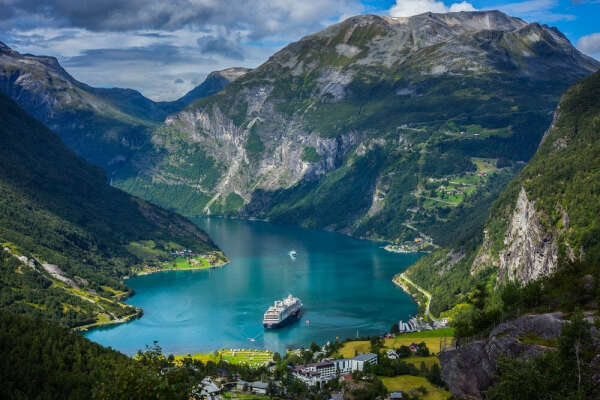

Чем заняться на даче?
На даче все время найдется работа — прополоть, высадить, надрезать, подвязать, прибить и так далее. А это уже изящная возможность для физического развития — чем не зарядка? Вот настолько вообще ненавязчиво можно собственного офисного мужа приучить к физическому труду. И для вас отлично, и ему польза. При этом, даже если ваш мужчина не будет помогать сажать грядки, можно поручить ему подметать дорожки либо убирать листву. А уж сходить пешком в магазин за чем-нибудь вкусненьким и вовсе будет ему не сложно.
В жаркие дни будет здорово вдвоем сходить скупаться на речку. А вечером можно будет пожарить шашлык на приусадебном участке. Во время дачного отдыха можно вырастить собственные овощи, собрать сбор ягод и фруктов, из которых впоследствии получаются отличные кулинарные шедевры в виде заготовок на зиму: варенья и соленья. К тому же пища на свежем воздухе кажется вдвойне вкуснее и это непременно оценит ваш муж. Отдых на даче дозволяет получить заряд позитивных чувств, а вдалеке от муниципального шума гарантирован здоровый и крепкий сон.
Норвегия
Норвегия, или Страна фьордов, — сокровищница природных богатств и неповторимых нордических пейзажей, образец бережного отношения к экологии, страна уникальной культуры и мифологии. Климат здесь суровый и непредсказуемый. Практически постоянно на территории всех 11 фюльке (областей) пронизывающие ветра, пасмурная погода, а на севере — холодные зимы. Лето — короткий период, когда в страну можно приехать без чемоданов с тёплыми вещами, поймать максимум солнечных дней, устраивать пикники на природе, ночевать в палатке и кататься на велосипеде по горным тропам.
Основная цель туристов в Норвегии — фьорды. Эти живописные узкие заливы, врезающиеся в сушу по всему побережью на расстояние до 200 км, окружены скалами причудливой формы и зелёными долинами. Столицей фьордов называют город Берген — отсюда начинаются базовые маршруты круизных лайнеров, доставляющие туристов к природным красотам. Ради живописного фото поднимитесь на Язык Тролля — выпирающую скалу над озером Разенган. Насытившиеся фьордами туристы посещают Лофотенские острова у северо-западного побережья страны. Чтобы сэкономить на жилье, можно проживать в палатках на территории охраняемых кемпингов. Не менее интересен Осло — здесь можно посетить музей художника Эдварда Мунка, свободно зайти в ратушу, где вручают Нобелевскую премию мира, или погулять по кварталам современного района Акер-Брюгге.
ДЛучшее время для поездки: с июня по август — воздух прогревается до 25 °С, выпадает минимум осадков и больше всего солнечных дней.
Греция
Одна из колыбелей мировой цивилизации, солнечная Греция привлекает туристов разнообразием курортов, чистейшей бирюзовой водой Эгейского моря, развитой инфраструктурой и качественным сервисом. Греческая средиземноморская кухня — одна из самых полезных для здоровья. В стране сосредоточены важнейшие античные памятники. Отели на любой вкус и кошелёк позволяют комфортно отдыхать туристам с любым бюджетом.
Каждый курорт Греции уникален своими жемчужинами. Остров Крит знаменит Кносским дворцом — памятником минойской цивилизации, пещерой Зевса и бывшим венецианским городом Ханья. Вулканический остров Санторини привлекает городом, построенным из лавового камня, и кратером подводного вулкана в гавани, остров Корфу — уютными бухтами, Тасос — тихими хвойными лесами.